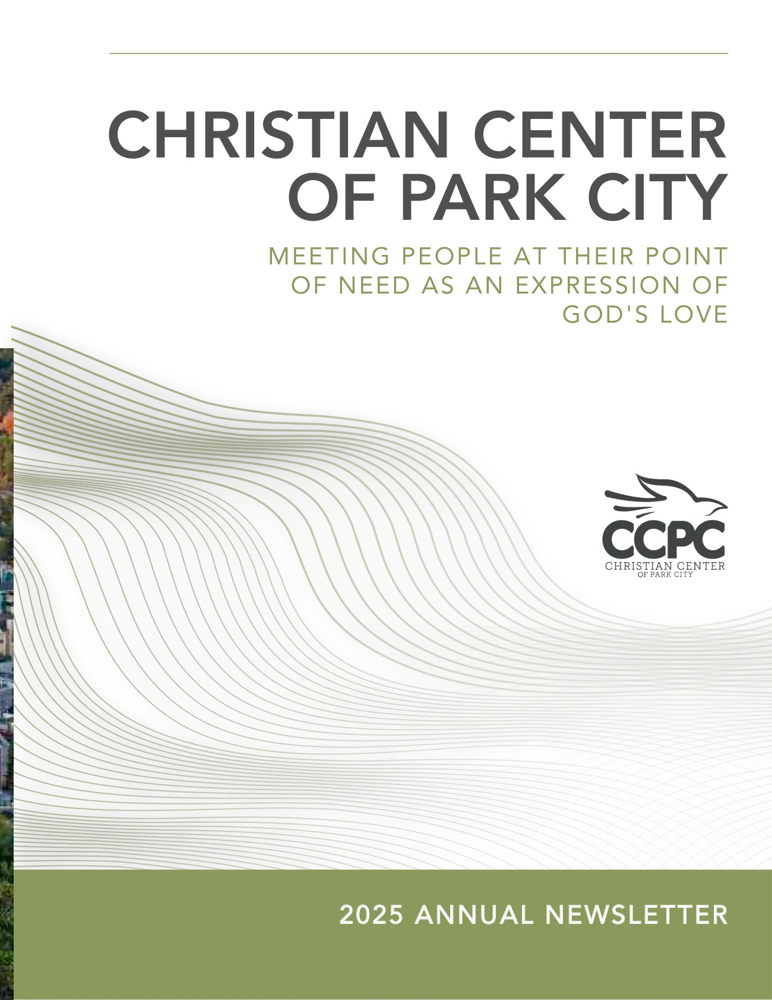
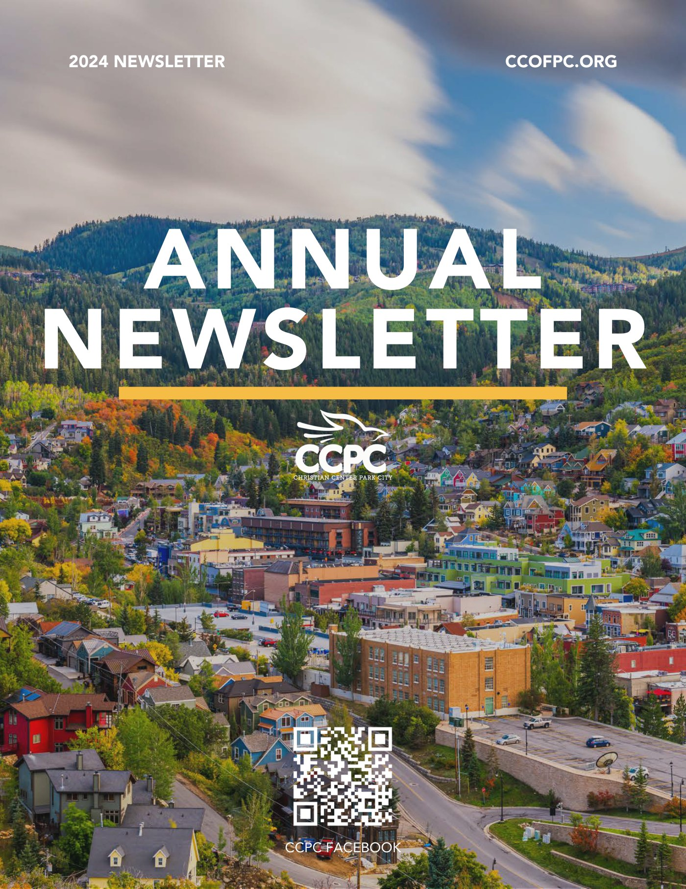
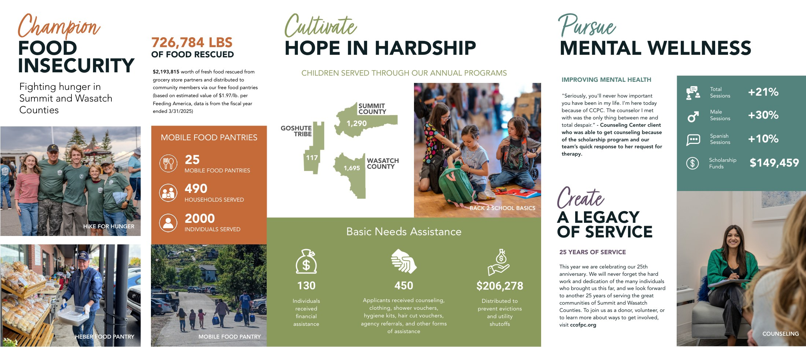

Getting a multi-department nonprofit to speak with one voice.
Ongoing marketing and design across a nonprofit running food security, counselling, thrift retail and community programs.
- Role
- Marketing and Grant Manager
- Year
- 2023 to now
- Scope
- Brand, campaigns, print, events, grants
- Status
- Ongoing

The brief
The Christian Center of Park City runs several programs that each have their own audience, their own funders and, when I arrived, their own way of presenting themselves. Departments were producing materials independently, which meant donors were meeting several versions of the same organization.
My remit covers marketing, graphic and UX design, social content and grant writing, which means the same person is responsible for how the organization looks to a donor, a client and a foundation.
What I did
The annual newsletter is the clearest example of the consolidation. One publication a year, with every department's year reported inside the same structure instead of in separate handouts.
The cover has moved on across the three years, from full bleed Park City photography in 2023 and 2024 to the lighter typographic 2025 treatment. The format moved too: 2023 ran to twelve pages and 2024 to sixteen, while 2025 folds the whole year into a single tri-fold sheet. What held underneath is the part that matters: the mark, the palette, and one reporting structure every department files into.
Event identity runs off the same foundations. The Summit Exchange material uses the topographic line work and the bird mark to tie a one-off event back to the parent brand without needing a separate logo.
All three editions are here in full: 2023 (PDF, 4.4 MB, 12 pages), 2024 (PDF, 5.0 MB, 16 pages) and 2025 (PDF, 6.1 MB, tri-fold).



Outcome
The 2025 edition is where the consolidation earns itself. One tri-fold sheet carries the entire year: 726,784 lbs of food rescued, 3,102 children served across Summit County, Wasatch County and the Goshute Tribe, $206,278 distributed to prevent evictions and utility shutoffs, and a 21 percent rise in counselling sessions.
Those are the organization's numbers, not mine. My job is that a donor takes them in at a glance, which is why the interior is built as four labeled program territories, each with one headline figure, rather than a page of paragraphs a reader has to mine.
Next project
Smart Trail